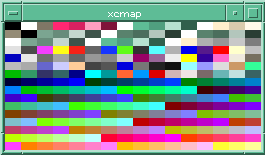

Figure 11. A 4x8x4 color cuboid plus 16-element grey ramp, with gamma correction
The means of providing and using high quality textual information on the Web has received a great deal of attention. Of course, there is still plenty of low-grade textual information out there. But the requirements are well understood and the infrastructure is in place for those who wish to generate or use quality text.
Much graphical material on the Web is also of poor quality, but in contrast the requirements for high quality graphics on the Web have received much less attention. Granted, many graphics are mere adornment, but some are not. Graphics can be valid information in their own right.
It would also be dangerous and limiting to assume that browsing constitutes the totality of present and future Web use. In some applications, the graphical component can be essential. Thus, it makes sense to evaluate the particular requirements for quality Web graphics.
A sample of existing and potential application areas dependent on high quality images:
This paper will survey some major areas affecting two-dimensional, static, raster graphics quality. Vector graphics (such as CGM), three-dimensional graphics (such as VRML), animations, and movies are not considered.
It will focus on areas such as accurate color and tonal rendition which may as yet be unfamiliar to developers of Web user agents. Topics which are important for Web graphics in general, but do not strictly relate to graphics quality--such as compression efficiency--are also outside the scope of this paper.
Computer Graphics can be seen as a somewhat specialized area--particularly where accurate rendition is required. Yet parts of it need to be understood to produce good graphics. Experience has shown that users can be harshly critical of browsers with poor image quality, even if these same browsers excel in other areas. The thrust of this paper is to pull together separate strands of computer graphics as they relate to Web user agents, to make it easier to provide the increasingly high levels of graphical quality that users are demanding.
A number of different quality requirements are discussed in this paper. Attempting to implement a single one of these in isolation can be difficult, as there are strong interactions between them. Partial implementation still requires an awareness of the other factors. This paper highlights known interdependencies to make the implementor's job easier and prevent nasty surprises.
Aliasing is an artifact caused by inadequate sampling frequency (1). The term is most commonly applied to spatial aliasing, which manifests as visible pixelation--a blocky or jagged effect--especially with near horizontal or near vertical lines of high contrast. It is thus particularly noticed with textual annotation of images. Figure 1 shows a sample image, converted from a PostScript file with one sample per pixel, that displays severe spatial aliasing.
Figure 1. A severely aliased image
Aliasing may be reduced by taking multiple samples of the underlying information. In the case of a computer graphics technique such as raytracing, this involves shooting multiple rays through different parts of each pixel. In the case of PostScript conversion to images, this is achieved by rasterizing at a higher resolution, then resampling down to the intended resolution. Figure 2 shows the same PostScript file rendered with 16 samples per pixel. Much less aliasing is seen. Careful examination of the edges of lettering and the colored blocks shows that the background and foreground colors have been blended together based on their subpixel coverage.
Figure 2. An antialiased image
Image file formats that support transparency are able to make certain designated pixels wholly or partially transparent, so that the background color or texture shows through. In this way, nonrectangular images may be simulated regardless of the background color or texture of the user agent, as in seen in Figure 3.
Figure 3: An image with binary transparency.
The simplest type of transparency is binary--each pixel is either on or off. This may be specified by a binary transparency mask, or (particularly with palette-based formats) by nominating a particular color or group of colors to be transparent. The latter method is used by the GIF89a format [4] and is widely supported in current Web user agents.
There is a severe interaction between antialiasing and binary transparency. Because the background color of the image is mixed in with the foreground colors, simply replacing a single background color with another is not enough to simulate transparency. There will be a whole host of shades which are mixtures of background and foreground colors, as Figure 4 shows. The effect in this case is a white halo around objects, because the original image was antialiased to a white background color.
Figure 4. Halo effect caused by anti-aliased edges
An improvement on binary transparency is variable transparency, also known as an alpha mask or alpha channel. Here each pixel can take any value between fully opaque and fully transparent, and this value is independent of the color of that pixel. Besides allowing smooth transitions between a graphic and the background, this permits a different type of antialiasing.
Foreground colors contributing to a particular pixel are mixed together according to their subpixel foreground coverage, ignoring contribution from the background. The alpha channel value is used to express the fractional contribution of the original background, irrespective of that background's color. When rendered, this alpha channel specifies for each pixel what proportion of the existing background is to be mixed with the forground image data to produce the final color of each pixel. In this way, the antialiased image can be displayed on any background or texture, or indeed composited on top of another arbitrary image, without the artifacts seen with binary transparency.
There has been an increase in the number of antialiased images as people strive for better quality, and this brings to the fore a number of interactions. That between antialiasing and binary transparency has already been noted. Also, antialiased images contain a lot more colors than aliased ones, which puts pressure on the color allocation strategy.
Variable transparency is most easily implemented with a truecolor display, because if any image pixel may be mixed with the user agent's background color or texture in any proportion, the total number of colors in a displayed image can become quite large. It can be implemented in a color-scarce environment provided an off screen buffer is provided to composite the image before reducing it to the current palette.
Future Web user agents should permit as inline images formats that support variable transparency, to allow quality antialiased images that are independent of the background color or texture. Suitable formats include extended TIFF [5] and PNG [6]. This will encourage information providers to migrate away from formats that only support binary transparency, such as GIF89a.
This will also allow the OVERLAY attribute of the draft HTML 3.0 FIG element [7] to be deployed more effectively. Overlays are only of use if one can also see what is being overlaid.
When expressing a color in RGB, what we are trying to specify is the amount of light which will be emitted from each phosphor, as a fraction of full power. What we are actually specifying is, however, the voltage which will be applied to each electron gun.
The two are not linearly related, because the amount of light emitted is proportional to the beam power rather than the voltage. The beam power is the product of voltage and current, and current turns out to be roughly proportional to the grid voltage to the power 1.5. Thus, the light emitted is proportional to the voltage to the power 2.5 or so. The actual value of the exponent, called gamma, varies somewhat, and the power law is only an an approximate model of the real situation, albeit a good one. An additional optical effect caused by viewing images against a dim surround is that the effective gamma value is somewhat reduced, from a theoretical 2.5 to around 2.2
To deal with this nonlinearity, the inverse power function (1/2.2) is applied to the RGB data before display, compensating for the nonlinearities which will be introduced. Figure 5 shows a typical correction curve, which is a mirror image about the line Input = Output of the display nonlinearity. (In other words, the display nonlinearity curves down from a straight line, and so the gamma correction curves up from that line [8].
Fig 5. A typical gamma correction curve
There are a number of places at which this correction could be applied, and this affects how Web user agents handle image data.
The end result of all these potential corrections, plus the display nonlinearity, must equal a linear transformation for accurate tonal reproduction to be obtained. The Web user agent must therefore be aware of the amount of correction from step one (in the image file received from the server) and from steps two and three (provided by the underlying platform) so that the appropriate correction can be made.
With most image formats there is no way to determine if any correction has been applied at step one, and if so, what value was used. This results in considerable uncertainty among information providers as to how to proceed. The following quote is typical:
We have no real stats on what people on the nets have and what looks best. Most Mac's wash out the colors while Windows 3.1 make everything look dark. We need to know what is the best approach to providing free graphics. Please let us know what you want!
What is needed is for the image file to contain machine-readable details of the correction that has been applied. This facility has been part of the Utah RLE format [9] for several years. TIFF files [5] can contain very precise transfer curves although most in practice do not. PNG [6]also has the facility to record any gamma correction that has been applied. Kodak PhotoCD [10] uses a single standard transfer function. Clearly, such formats make the user agent implementor's job much easier.
If an image is under or over gamma corrected, this also affects the color balance. Over correction (in addition to making mid-tones too light) shifts colors towards neutral gray, while under correction (in addition to making midtones too dark) shifts colors towards the display primaries.
Viewing on screen and printing on paper are two processes with very different transfer characteristics, so what is right for one is not right for the other. The extent of the mismatch depends on how much of the required correction has already been done to the image, how much is done in the viewing software, and how much (if any) is done by the software or hardware of the underlying platform.
User agents should provide some sort of gamma correction which does the right thing in as many cases as possible. This might be done by, in order of importance:
User agents which offer printing should be aware of the different gamma requirements for screen and print and might offer similar facilities (allowing customization, printing a test chart) to adjust gamma for printing.
A quick spot of color theory before we can move on. The bare minimum, really! (1)
The color of an object depends not only on the precise spectrum of light emitted or reflected from it but also on the observer--their species, what else they can see, even what they have recently looked at! Color is not an objective property of real-world objects; it is a subjective, biological sensation.
Given the preceding description of color sensation, one might be forgiven for assuming that there is no way to cope with these vagarties. However, by treating the entire human eye/brain system as a black box and performing color matching experiments upon it, it has been possible to arrive at a surprisingly objective, measurable and repeatable model of color that corresponds in large measure with how we see color. This system, invented and standardized in the 1930s by the International Commission on Lighting (Commission Internationale de l'Eclairage, or CIE) [14] is called CIE XYZ [15] and is capable of representing all colors that can be seen by the human visual system. The XYZ value of a color can be measured by physical instruments or calculated from the spectrum of light given off by an object.
When we look at an image on a computer screen, what we see depends on the precise color and intensity of light emitted by each of the three phosphors in a computer monitor; this in turn depends on the make and the model, plus less tangible factors (such as the age--blue phosphors degrade faster than the other two). In the limit, each monitor is unique. This means that the same R,G,B values applied to two different monitors will give different colors; similarly, to produce exactly the same color on two different monitors, different R,G,B values must be applied.
Provided the CIE XYZ measured colors of the red, green and blue phosphors are available for a particular monitor, any RGB color on that monitor can be converted to CIE XYZ. Similarly, any measured CIE XYZ color can be reproduced on that monitor, provided it falls within the range of displayable colors--the gamut--bounded by the monitor primaries.
Figure 6 shows the triangular gamut of one particular monitor, drawn on a chromaticity diagram. This is a way of reducing the three dimensional CIE XYZ space to two dimensions by removing the brightness information (light orange and dark orange map the the same chromaticities). Different monitors will have different gamuts.
Figure 6. The color gamut of a sample monitor (an HP A1097C)
CIE XYZ is the fundamental system for color measurement, but (like RGB space) it is not perceptually uniform. That is, the geometric distance apart of two colors does not relate to how different those colors appear. However, in 1976 the CIE came up with a transformation of CIE XYZ space that is (fairly) uniform. This is CIE LUV space, which will be used in the next section.
The L parameter stands for lightness. A gray scale with even numerical steps along the L axis will look even, and a mid gray will be at exactly the middle of the L axis. It is easier to think of the other two axes in terms of polar coordinates. The further a color is from the central L axis, the more saturated it is. The angle round from the positive U axis relates to hue.
And, in summary, if we plot a series of colors in CIE LUV color space, we can tell how evenly spaced those colors are from each other.
Graphical workstations and high-end personal computers are generally equiped with 24 bit truecolor displays--pixels can independently be set to any desired color. 8 bits (256 levels) of red, green, and blue are available giving 16.7 million displayable colors. This is enough to eliminate most banding except for large, slowly varying dark areas, or when gamma correction is done by lookup table. Higher quality systems use 10 or 12 bits per pixel, which is enough to eliminate visible banding from all areas of the RGB color space. Such systems are capable of displaying multiple high quality images.
16 bit displays are also typically used in a truecolor mode. This gives slightly worse results than indexed mode with single images containing 256 colors or less, but vastly better results with multiple images. A fine compromise between the somewhat inadequate 8 bit displays and the luxury of 24, 30, or 36 bit displays, they are now common on current PCs and Macs.
With an 8 bit indexed display, each pixel holds an index into a table of color cells. There can be at most 256 distinct colors on screen at once, although these colors are not fixed and can be set to any desired color. This system saves on expensive screen memory and is fine for non-graphics-intensive tasks such as displaying single images. It starts to struggle when multiple images are to be displayed concurrently, a common situation for a Web browser. 8 bit displays are common on current X terminals and on older computers.
Systems with insufficient colors to display multiple arbitrary images have to allocate a small number of colors, which are then used to approximately represent the needed colors. This process is termed quantization. A number of strategies have been developed for this; each has its merits in certain situations, but none is universally suitable. Dithering, or trading spatial resolution for an increase in the apparent number of colors, can be used to mask the effect of the color shortage. A poor choice of dithering algorithm can cause objectionable graininess or spotting on an image.
The simplest strategy is to start allocating colors with the first inline image and continue until you run out; then map all remaining colors to the nearest of those previously allocated. This works well when there is only a single inline image, or multiple images with few colors (such as hand-drawn icons), or when there are a number of images with similar colors such as several grayscale images.
This strategy falls down when:
Symptoms of this scheme breaking down are severe and objectionable color casts on those images which loaded last. Early versions of NCSA Mosaic for X [1] employed this approach. The latest versions appear to be using some sort of adaptive palette management, optimized for those inline images which are currently visible, although this has problems with rapid scrolling.
In an attempt to prevent the problems just described, this method allocates a fixed range of color cells in advance, and then maps all colors of all images to the nearest allocated color. The same color map is used for every HTML page.
In effect, it treats part of the 256 element lookup table as a truecolor display. With an even (in RGB space) allocation, colors from each inline images are speedily mapped to palette colors by multiplication and masking. The problem with this approach is that coverage of the device color space is necessarily sparse. Six levels each of red, green, and blue (the maximum that can be used) requires 216 unallocated color cells.
Seen in CIE LUV color space, some clumping of the allocated colors is evident in Figure 7. The necessarily sparse sprinkling through the color gamut is clearly seen.
Figure 7. A 6x6x6 Color Cube Without Gamma Correction
When other concurrent applications are also utilizing the color map, it frequently happens that 216 unallocated cells are not available. The cube must be contracted down to a 5x5x5 cube (125 colors) or even a sparse 4x4x4 (64 colors) cube shown in Figure 8. Huge gaps can clearly be seen. Dark greens, for example, will show severe specking as the nearest colors, dithered together to approximate the desired hue, will be very dissimilar.
Figure 8. A 4x4x4 color cube without gamma correction
A color palette allocated by Netscape 1.1N for X [16] is shown in Figure 9. A 6x6x6 cube has been allocated in this instance. The cells used by Netscape start with the four greys at the end of the third row.

Figure 9. Sample color palette used by Netscape 1.1N for X
There are two changes here. Firstly, the number of shades of green has been increased, to fill in the large perceptual range from black to green and from green to white; secondly the colors have been gamma corrected before being allocated (this assumes the underlying platform does not provide any hardware gamma correction, which is frequently the case). The effect, sen in Figure 10, is to move all the colors up the lightness axis. Compare this with Figure 7.
Figure 10. A 4x8x4 color cuboid with gamma correction
This plot shows a more even color distribution, although with a slight lack of the darker colors. In practice, ambient lighting, glare, electron scattering and similar factors increase the lightness of the darkest visible color, making this less noticeable.
Because of the different interval between adjacent green intensities (1/7th of the range) compared to red and blue (1/3rd the range), at no point within this cuboid is there a color with equal red, green and blue values (apart from black and white). Thus, there are no grays.
The human eye is particularly sensitive to small changes in gray colors, steps in intensity, or deviations in hue from a pure gray. So as it stands the cuboid in would give especially bad display of grayscale images. The addition of a 16-element grayscale ramp to the scheme in Figure 11 attends to this shortfall.
Figure 11. A 4x8x4 color cuboid plus 16-element grey ramp, with
gamma correction
This sort of scheme is used by current versions of Arena [17] (0.96s and 0.97g) as the typical colormap in Figure 12 shows. The cells used by Arena start with the four grays at the end of the third row and finish at the end of the third last row. Notice that the gray ramp is allocated first. In conditions of severe color shortage, at least the grey ramp will have been allocated and Arena proceeds to convert all color inline images to grayscale, preserving much of the graphical information and providing a pleasing appearance.
Figure 12. Sample color palette used by Arena 0.97g
It would be possible to allocate a range of colors chosen to be evenly spaced in CIE LUV space, to minimize objectionable spotting when images are dithered. There would be no simple relationship between the image colors and the allocated colors (as there is with a cuboid scheme) so the image would have to be quantized to the new palette. Quantization is a slightly more time-consuming process than simple truncation or masking, and would make a browser feel slightly more sluggish.
Quantizing to a known fixed palette can be done as the image streams in. Image formats which include popularity-sorted suggested palettes, such as PNG, can also be quantised as they stream in. If the palette is not fixed, and the image provides no hints, quantization cannot proceed until all the images have been loaded.
Another possible improvement would be to requantize all the inline images to an optimal adaptive palette, after they have all been loaded and displayed. This might be presented to the user as an optimise this page option, or a user agent might take advantage of idle CPU time while the user is reading and scrolling, to perform the quantization. The visual effect would be similar to the sharpening observed with interlaced GIF and PNG and progressive JPEG. This would require storage of the un-quantized images, which many user agents already do as a local caching optimization
Some images with a limited number of colors, such as hand drawn icons with large areas of flat color, do not necessarily require good color fidelity. The speckling introduced by trying to simulate the desired color may be more objectionable than a change in hue. Smart user agents might detect such images--perhaps ones with 32 or less colors--and disable their dithering on a case by case basis.
Moving from an 8 bit indexed scheme to a 16 bit true color scheme results in a marked improvement in color fidelity. Figure 13 shows a typical scheme with 5 bits for red and blue, 6 bits for green. (Note that this implies that a pure grey ramp is not produced, only an approximation, though the deviations are small.) The full range of the color gamut is densely occupied by the 65 thousand color points in this diagram, even though the size of each colored sphere has been reduced to a third of that used in the other diagrams.
Figure 13. A 32x64x32 color cuboid, without gamma correction
User agents that use fixed color allocation and support binary transparency may have problems if their background color cannot be exactly represented.
Implementation of full transparency, or binary transparency with background textures, requires large numbers of colors even if the original image contains few colors.
Resampling (resizing) a limited color image by any method other than pixel replication will increase the number of colors needed for the resized image.
User agents forced to use displays with inadequate colors cannot really display arbitrary multiple graphics with any sort of fidelity, regardless of how evenly spaced the colors are. While some improvement can be made by allocating a perceptually even set of colors, this is counterbalanced by slower image display as all images are quantized. Thus, attempting to allocate a small fixed palette which is perceptually even is probably not worth the effort unless the underlying platform has a powerful CPU.
In conditions of profound color shortage, presenting all images to greyscale preserves the most detail and looks far better than attempting to quantize to 27 or less colors. Ensuring that grayscale data can be adequately represented at all times is also a sound policy.
The increasing availability of inexpensive truecolor displays should ease (and in time, eliminate) these problems. Truecolor displays are the prerequisite for further advances in accurate image reproduction.
We have already seen that the same RGB image will display with different colors on two different monitors. To some extent this is unavoidable as some colors at the edges of one gamut are outside the other monitor's gamut, and vice versa.
Manufacturers currently take a great deal of care to ensure that certain colors, for example those associated with a particular brand or with a corporate logo, are reproduced precisely in printed media. It is only a matter of time before they demand a similar fidelity from online media.
In some cases, we could produce a more accurate color rendering, but we would need to know the CIE XYZ values of the monitor on which the original image was generated. In most cases, we do not know this.
By analogy with gamma, if this information was stored in the image file then a start could be made with increasing the color fidelity. There are currently three image formats that hold such information. One is Kodak PhotoCD [10], another is extended TIFF, and the third is PNG.
Knowing the CIE XYZ values of the current system monitor and (from the image) of the originating monitor, a color transform for accurate display may be computed and applied to an image at minimal computational cost. In some cases, color management functions may be provided by the underlying platform.
Knowing chromaticity data of the originating monitor it is trivial to compute the correct color to grayscale transformation. This gives noticeably superior results, even on an 8 bit indexed display, to the oft-quoted formula Gray = 0.30R + 0.59G + 0.11B which is only correct for the NTSC broadcast monitor, greatly atypical of modern computer monitors.
Whenever people acquire a color printer they are initially delighted, but typically soon become disillusioned as the quality of output falls far short of their expectations--a color magazine, for example. While accurate screen-to-print color matching is still not a fully automated process, advances have been made in recent years and modern printers with a Level 2 PostScript interpreter can take calibrated RGB data and do a better job of matching the on-screen colors than with raw RGB data.
More advanced methods of generating accurate portable color have been proposed, such as the International Color Consortium Profile [18]. A legitimate concern is whether these more complex methods will supersede the methods discussed in this paper. The answer is that they may well do, but as all such approaches are built upon the foundation, directly or indirectly, of the CIE XYZ color space, the simpler approaches are headed in the right direction and offer a smooth upgrade path.
Attempting to produce better colors for screen display or for printing assumes that simpler issues such as the gamma correction are being handled correctly and that a truecolor display is available.
Accurate device independent color reproduction has been spreading from high-end pre-press applications into the mainstream for the last five years or so. Web user agents which are able to make use of chromaticity information will be at an increasing market advantage in the years to come.
The topic of metadata has received some attention in connection with textual data. Graphics too can have important metadata, such as Copyright details, descriptions of the content of the image, legal disclaimers, or technical descriptions of the method of image synthesis employed. More application-specific metadata could include:
and so on. This information needs to be associated with the graphical information in some way. As images become used as more than mere adornment, the role of image metadata will grow. Quality graphics have associated metadata.
The traditional method of transmitting such information has been via a separate text file. There is however the risk that the two files will become separated. Metadata can also be supplied as an HTML file, with the image linked to or supplied inline, to make a stronger connection between the image and its metadata.
These methods have consistency problems--particularly in a caching proxy environment--when either the image or the metadata needs to be altered.
Rather than embedding the image in the metadata, several image formats allow text of various kinds to be contained within an image. The advantage of this is that the metadata cannot be inadvertently separated, and hence for example the copyright details of a graphic are unambiguous. Keeping the information in a single file also permits the use of message digests (as proposed in the draft HTML 3.0 specification [19]) on link anchors, to ensure that the currently linked-to graphic is exactly what the document author intended to link to with that URL.
The disadvantage of embedded metadata is that the Web user agent must extract the information and display it. The means of doing so are necessarily different for each Internet Media type. It is a trade off between inconvenience to the implementor and the convenience to the user of a single consistent user interface. This has to date been one of the Web's strengths, and a browser which presented embedded metadata by generating an HTML page would be highly suited to applications where image quality was considered important.
A third, compromise possibility would be to link to a multipart Internet Media type containing image data and an accompanying metadata file. There is as yet little experience, however, with the presentational aspects of multipart objects.
There are no known interactions between providing this facility and any other aspects of graphical excellence.
Providing the ability to directly view embedded metadata in graphics files for a small number of suitable Internet Media types associated with high quality graphics would be an interesting experiment. PNG is a relatively simple format which provides for text chunks with associated keywords, and the coded character set for these chunks is ISO Latin-1. There is a freely available C library for reading and writing PNG files, including extraction of text chunks. It would thus be a suitable candidate for trial implementation of this facility.
It is possible to provide high quality graphics on the Web if due consideration is given to the appropriate factors. This need not result in reduced interactive performance if care is taken. Inappropriate choices result in severely suboptimal graphics which users are quick to see and complain about; bad graphics are very visible. There is increasing demand for high quality graphics. User agents that take note of this trend will have a market advantage.
1. Mosaic for X (the initial platform) is described at http://www.ncsa.uiuc.edu/SDG/Software/XMosaic/help-about.html
2. Watt, A. and Watt, M. Advanced Animation and Rendering Techniques. New York : Addison-Wesley, 1992. ISBN 0-201-54412-1
3. Glassner, A.S. Principles of Digital Image Synthesis. San Francisco : Morgan Kaufmann Publishers, Inc., 1995. ISBN 1-55860-276-3
4. The GIF 89a specification is widely replicated around the Internet. A sample URL is ftp://ftp.ncsa.uiuc.edu/misc/file.formats/graphics.formats/gif89a.doc
5. The Tagged Image File Format (TIFF) v.6 specification may be obtained from ftp://ftp.sgi.com/graphics/tif/TIFF6.ps.Z
6. The Portable Networked Graphics (PNG) specification is at http://sunsite.unc.edu/boutell/png.html
7. The FIG element of the HTML 3 draft specification is at http://www.hpl.hp.co.uk/people/dsr/html/figures.html
8. See for example Chapter 7 of Travis, D. Effective Color Displays. London : Academic Press, 1991. ISBN 0-12-697690-2
9. The design of the Utah Raster Toolkit RLE format is described at ftp://ftp.ncsa.uiuc.edu/misc/file.formats/graphics.formats/urt/rle.doc
10. Some information about Kodak PhotoCD is at http://www.kodak.com/productInfo/technicalInfo/technicalInfo.shtml
11. JPEG compression is an International Standard ISO/IEC 10918-1. The FAQ for JPEG is at http://www.cis.ohio-state.edu/hypertext/faq/usenet/jpeg-faq/faq.html
12. Wyszecki, G. and Stiles, W.S. Color Science--Concepts and Methods, Quantitative Data and Formulae. New York : John Wiley & Sons, 1982. ISBN 0-471-02106-7
13. The student notes from
Lilley, C. Lin, F. Hewitt, W.T.H., and Howard, T.L.J.H Color
in Computer Graphics. Sheffield : CVCP/USDTU, 1993. ISBN 1-85889-022-5
http://info.mcc.ac.uk/CGU/ITTI/Col/col-free.html
14. The Commission Internationale de l'�clairage Web page is at http://www.hike.te.chiba-u.ac.jp/ikeda/CIE/
15. Defined in
Colorimetry, 2nd Edition, Publication CIE 15.2-1986. ISBN 3-900-734-00-3
http://www.hike.te.chiba-u.ac.jp/ikeda/CIE/publ/abst/15-2-86.html
16. Netscape 1.1N for X is described at http://home.netscape.com/eng/mozilla/1.1/relnotes/unix-1.1N.html
17. Arena is described at http://www.w3.org/hypertext/WWW/Arena/
18. International Color Consortium Profile v3.0 is at http://www.inforamp.net/~poynton/ICC_3.0a/icc-0.html
19. The link model of the HTML 3.0 draft is described at http://www.hpl.hp.co.uk/people/dsr/html/anchors.html
Thanks to my colleague John Irwin for generating the Rayshade input files used to produce the CIE LUV scatter plots. Thanks also to Tom Lane of the Independent JPEG Group, Dave Martindale, Glenn Randers-Pehrson, and others on the PNG mailing list for helpful discussions on the requirements for a quality image format.
Chris Lilley [http://info.mcc.ac.uk/CGU/staff/lilley/]
Computer
Graphics Unit, at the
University of Manchester
In addition to various aspects of graphical quality, his
interests include Web tools for collaborative working, Web
standards, and the use of the Web for Education. He is an active
participant in the IETF HTML Working Group
and a contributor to the PNG working
group. He is also the JISC representative
to W3C.